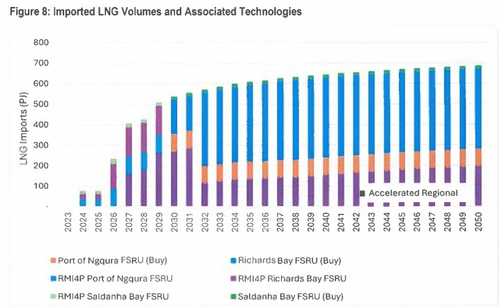

FSRUs are purpose-built LNG vessels that can receive, store and regasify LNG at sea — offering a faster and more flexible alternative to onshore terminals for South Africa's gas import strategy.
An FSRU (Floating Storage and Regasification Unit) is a specialised LNG carrier equipped with onboard regasification equipment. It moors at a jetty or buoy offshore, receives LNG from conventional carriers, stores it in its cryogenic tanks, and regasifies it on demand before sending the gas ashore through a subsea pipeline.
FSRUs are the preferred fast-track solution for countries that need LNG import capability quickly — they can be operational in 2–3 years versus 5–7 years for a comparable onshore terminal — and they avoid many of the siting, permitting and construction delays of land-based facilities.
The 2024 Gas Master Plan considers FSRUs as a near-term, deployable option for getting LNG into the South African market while permanent onshore terminals are designed and built. Key findings from the Master Plan include:
The figure below illustrates the FSRU concept as described in the Gas Master Plan: an LNG carrier delivers cargo to the moored FSRU, which stores and regasifies the LNG, sending gas to shore via a pipeline for power generation and industrial use.

Source: South Africa Gas Master Plan 2024 — FSRU concept overview.
| Factor | FSRU | Onshore Terminal |
|---|---|---|
| Time to operational | 2–3 years | 5–7 years |
| Capital cost | Lower (ship conversion or charter) | Higher (land, tanks, jetty, plant) |
| Permitting complexity | Lower (offshore or near-shore) | Higher (land use, EIA, construction) |
| Capacity flexibility | High (redeployable) | Fixed to site |
| Storage capacity | Ship tanks (125,000–170,000 m³ typical) | Customisable (multiple tanks) |
| Long-term cost efficiency | Higher per-unit cost | Lower per-unit cost at scale |